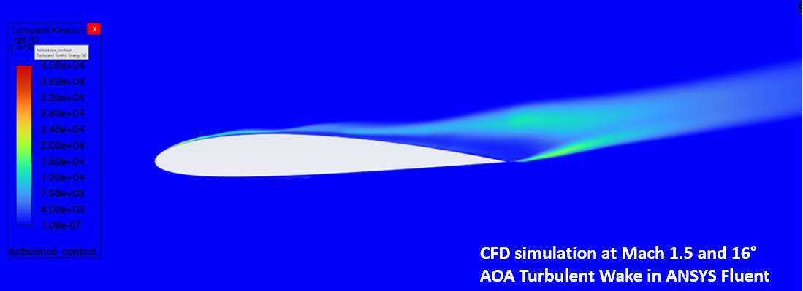
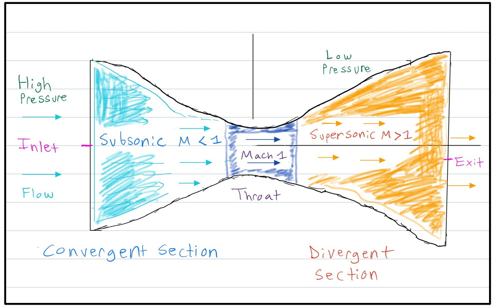

Graduate Student in Mechanical and Aerospace Engineering
Founder, Interlinked Aerospace
Hypersonic Aerodynamics & Propulsion · Fluid Mechanics & CFD · Aerospace Vehicle Engineering
I am a graduate student in Mechanical and Aerospace Engineering and the Founder of Interlinked Aerospace. My work focuses on hypersonic aerodynamics and propulsion, fluid mechanics and CFD, and the conceptual foundations of Aerospace Vehicle Engineering (AVE).


Academic and technical work not related to AVE.
For the full list of AVE discipline‑level work, visit the Aerospace Vehicle Engineering Center (AVEC).
email@outlook.com